壹 前言
第一次以集中时间的方式参与一个项目，因此笔者想要实现上一次没有完成的目标：持续更新科研日志！✊一方面能促进自己日复一日地推动进度🏃，另一方面也能在记录自己遇到与亟待解决的问题✍
笔者理想状态下是想日更😊，但是肯定在暑期前期还未正式“上班”前难免抽身乏术😔。但是问题不大！抽时间推推进度总是好的✔！
那话不多说，其实项目推进有几天了，让我们简单回顾一下，看看笔者最近做了什么事情（磨了什么洋工）
贰 LOGGING
06.29
- 看了看芬兰GNSS欺骗干扰论文，搭配gemini2.5食用体验极佳😋
- 作者团队的贡献是奠基性的，我本来以为他们提出的是非常鲁棒的欺骗检验算法，读完感觉比提出算法更有贡献意义，他们为行业提供了实验数据与配套的检验程序，当我们开发出自己的欺骗检验算法，可以插入到它的检验程序当中进行检验，而这篇论文提出的软件接收机则可充当我们最坚实、最直接的baseline👍
06.30
- 疑似摸🐟的一天，一直在找各种方法加速下载，校园网浏览器直链下载只有100+KB/s，反复尝试了
curl,wget,aria2等下载引擎，效果都不太理想，临近晚上才想起来之前下载但是没用上的Motrix，上次是从autodl平台下数据，但是平台有加密根本无法用Motrix下载，但是这次可以了。 虽然还是很慢，核心原因是这个数据网站是把数据一点一点传给你的，没有文件结束的位置，所以Motrix的分段多进程直接失灵了。以后还是去学长办公室下载叭😭
07.01
数据有了、论文看了，开始跑项目，大致流程就是通过向主程序
gsrx.m传入我们对应的配置文件txt，应该就是param_skydelL1band_290923.txt，然后需要根据自己的数据路径调整42、85行的内容，使用全英的绝对路径应该还是比较稳妥。然后没跑起来，不嘻嘻😓，应该还是文件配置出的问题。我的解决方案是精简了一下配置文件内容，把不必要的参数与开关移除了，剩余的应该只有以下核心指令：
- 做的内容：
sys,enabledSignals, sys,msToProcess... - 数据位置与形态:
sys,dataFileIn, gpsl1c,rfFileName, gpsl1c,samplingFreq... - 基本门限:
gpsl1c,acqThreshold, nav,elevationMask, nav,snrMask... - 信号类型:
gpsl1c,modType...
- 做的内容：
跑起来了这个简易版的demo，收获了一些图与数据——以及报错，报错信息记录一下：
1
2
3
4
5
6
7
8
9
10
11
12
13
14
15
16
17Could not find valid preambles for gpsl1c prn 4!
Could not find valid preambles for gpsl1c prn 5!
Could not find valid preambles for gpsl1c prn 9!
Could not find valid preambles for gpsl1c prn 11!
Could not find valid preambles for gpsl1c prn 12!
Could not find valid preambles for gpsl1c prn 18!
Could not find valid preambles for gpsl1c prn 20!
Could not find valid preambles for gpsl1c prn 25!
Could not find valid preambles for gpsl1c prn 26!
Could not find valid preambles for gpsl1c prn 28!
Could not find valid preambles for gpsl1c prn 29!
Could not find valid preambles for gpsl1c prn 31!
调用 "generateCorrectionInputData" 时，未对输出参数 "corrInputData" (可能还包括其他参数)赋值。
出错 doNavigation (line 49)
[corrInputData] = generateCorrectionInputData(obsData,ephData, allSettings);
出错 gsrx (line 137)
[obsData,satData,navData] = doNavigation(obsData, settings, ephData);
07.02
用大模型快速解读一下生成的图片，下面分享一些我的理解： 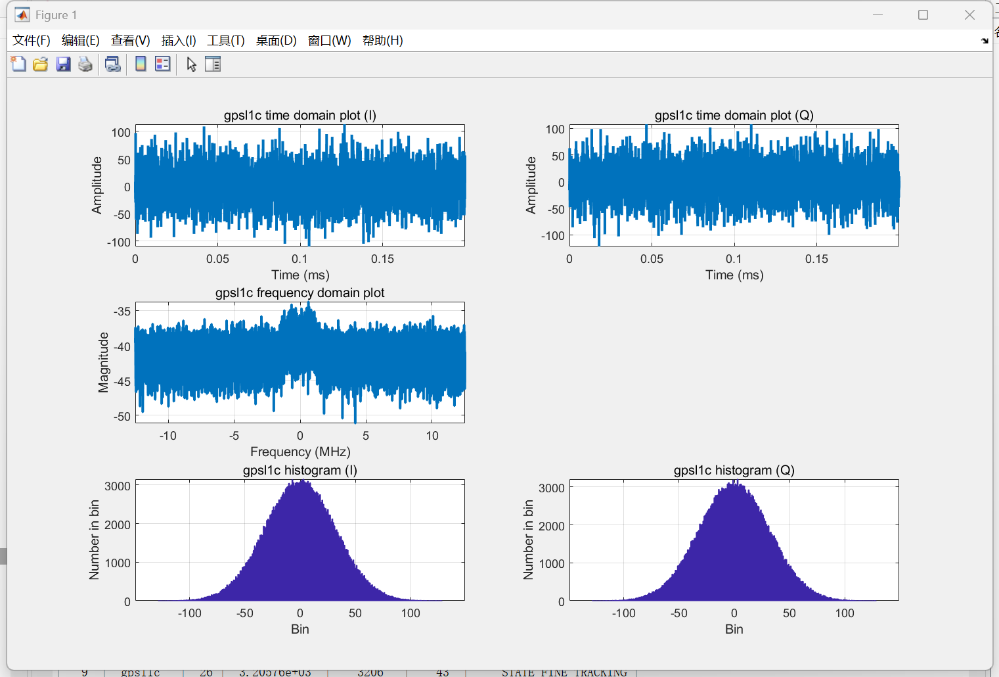
这个图是原始信号概览，最明显的是能看出来是否有异常的干扰与欺骗，其中四张图分别是I信号与Q信号的时域图和直方图，对于I信号与Q信号，大模型的理解如下：
- I和Q值是经过接收机前端处理后，用来“描述”原始卫星信号的一种数学表示方法。I和Q值是经过接收机前端处理后，用来“描述”原始卫星信号的一种数学表示方法。
- I (同相) 分量: 代表了信号中与接收机本地产生的参考载波“同频同相”的那部分能量。在GNSS中，我们设计的接收机就是要让所有有用的数据信息都承载在I分量上。
- Q (正交) 分量: 代表了信号中与接收机本地产生的参考载波“同频但相位差90度”的那部分能量。在一个理想的、完美锁定的接收机中，Q分量应该只包含噪声，不包含任何有用信息。
时域图的锯齿状折线展现出了原始数据存在一定的噪声，而直方图展现出高斯分布符合中心极限定理给出的一般结果，说明没有异常的、恶意干扰的噪声。
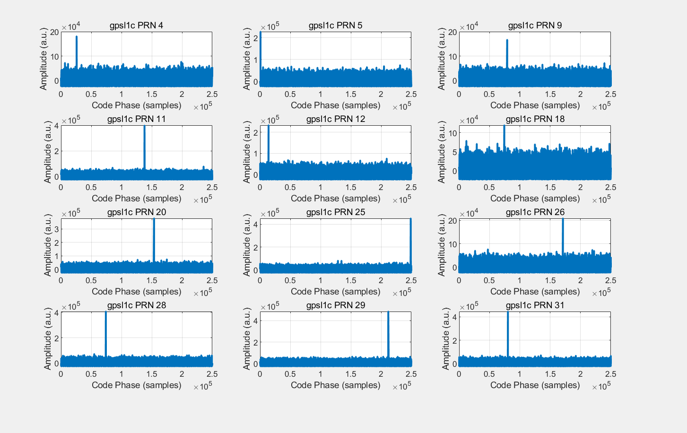
图Figure2是信号捕获结果，每个小图对应着一个对接到的卫星，比较平坦的低值便是大量和本地码无法对接的噪声，而峰值便是对接成功的卫星信号。
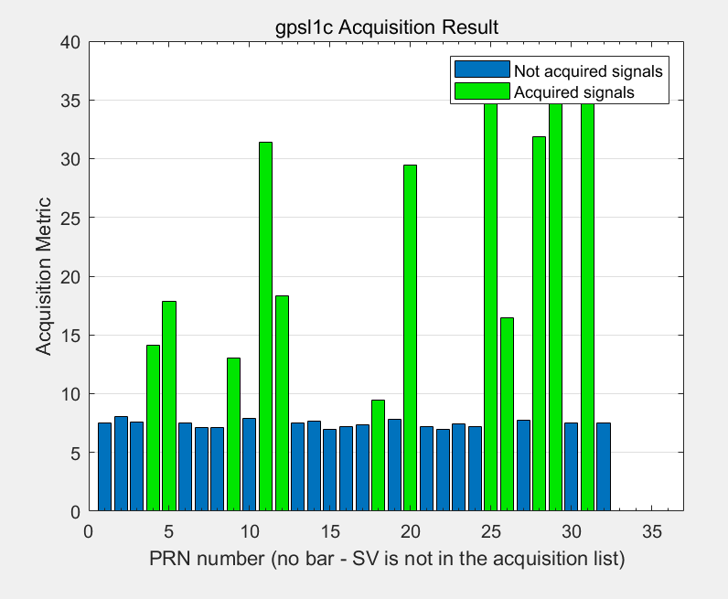
Figure3便是展现了哪些卫星被成功捕获，值得我们进一步跟踪。这里貌似是用5-10的一个阈值进行截断的，mark一下，比较好奇不同阈值会有怎样的影响
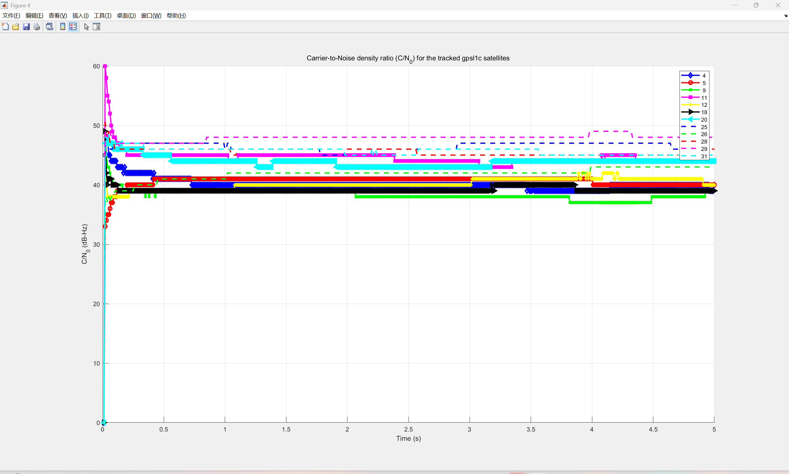
纵轴C/N0，中文翻作“载噪比”，全称为载波功率和噪声功率谱密度，值越高，信号强度越高。然而在实际情境中，图像的上升或者下降都是异常事件，如果遇到同步欺骗信号，所有卫星对应的折线会整体异常上升；遇到干扰、异步欺骗信号则会同步异常下跌。
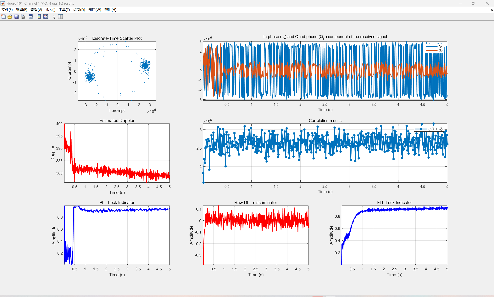
- 最上面两幅图展现了锁相环(PLL)的工作效果非常好，将信号能量集中在I信号上，能量泄露非常少。
- 中左展现了锁频换(FLL)快速修正频率误差的过程，在0.5秒后便趋于稳定、开始精确跟踪。
- 中右展现了捕获信号的整体强度。
- 下面两侧的PLL和FLL锁定图可以看到二者迅速上升到1，展现了二者成功锁定。中间的延迟锁定环(DLL)展现了零均值噪声，在0值附近抖动越小，码跟踪精度越高。
+++
今天和家乐学长聊了一下🤔，芬兰这篇项目论文对于我们而言是一个预处理程序，我们可以把它当作一个强大的特征提取引擎，今天花了一些时间把这些图的输出看个大概，那最重要的特征来源大致如下(经ai认证)
：
| 特征名称 | 为什么它有效？ | 如何获取？ |
|---|---|---|
| C/N₀ (载噪比) 时序 | 欺骗: 同步上升
(能量注入)。 干扰: 同步下降 (噪声抬升)。 这是区分两类攻击的关键特征。 |
从plotTracking生成的C/N₀图中提取所有卫星的C/N₀时间序列。 |
| 多普勒频移时序 | 欺骗:
出现与真实物理运动不符的、平滑但错误的漂移，或所有通道出现不应有的共同偏置。 干扰: 导致多普勒估计剧烈抖动或跳变。 |
从PRN跟踪状态图中提取Estimated Doppler的时间序列。 |
| I/Q 星座图特征 | 欺骗:
两个点云可能变形、发散，或者因为信号叠加出现“拖尾”。 干扰: 点云会变得非常发散，甚至糊成一团。 |
定期对Discrete-Time Scatter Plot进行截图，或者直接提取I/Q prompt值，计算点云的方差、偏度、峰度等统计特征。 |
| PLL/FLL锁定指示器 | 欺骗/干扰: 强攻击可能导致环路在锁定和失锁之间反复横跳，这个值会剧烈波动。 | 从PRN跟踪状态图中提取PLL/FLL Lock Indicator的时间序列。 |
| DLL鉴别器输出 | 欺骗:
同步欺骗可能导致这个值的均值持续偏离0，因为欺骗信号和真实信号的叠加会扭曲相关峰的对称性。 干扰: 会增加这个值的噪声水平（方差变大）。 |
从PRN跟踪状态图中提取Raw DLL discriminator的时间序列，计算其均值和方差。 |
接下来的工作应该就是复现论文结果了吧！🤔我们急需跑下来的数据应该就以下两个： 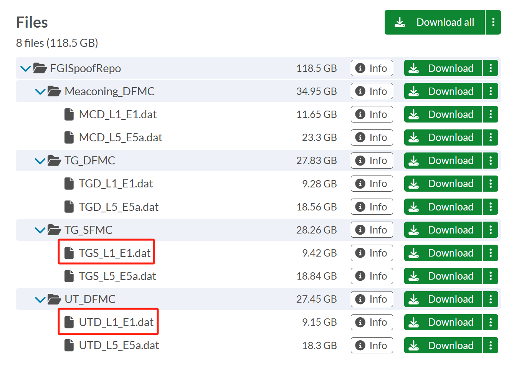
明天去临时工位下载数据集咯~
07.03
- 今天下了点雨，下载数据也遇到了一定的挫折，虽然有柏彦的超快网速，但是遇到了下载中断的问题，Motrix报错码为#24，在Github中没有找到明确已知解决方案，但是贴吧有人说修改UA设置，还需尝试。🤔
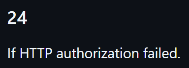
- 今日有实践队作业，先歇了...
07.04
- 和远在江西的舍友風船聊了一下，发现Motrix竟然默认关闭代理😶，于是打开代理，一定要把端口填对了，笨人填错了一回，下载速度直接归零了🤭
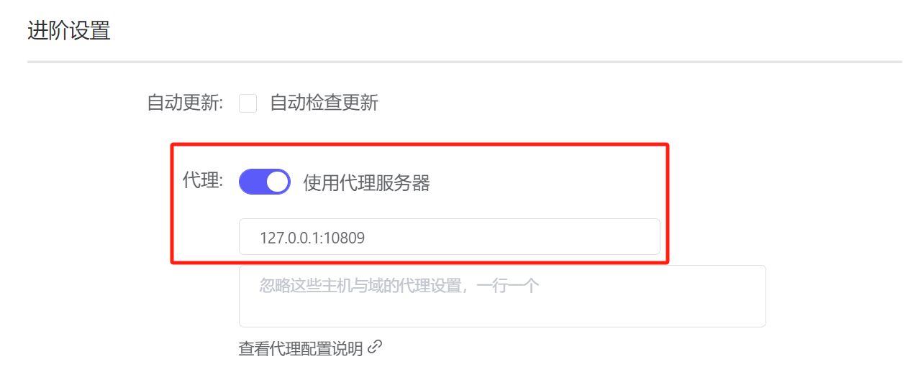
此外这个代理节点还有讲究，不仅速度上有差异，稳定性更是天差地别。
- 用美国的节点下载速度平均下来只有2-3MB/s
（目测），主要是因为它在下载后期会疯狂地掉速，掉到1MB/s左右的速度，此外会经常被中断，而对于这种只能下载一次的链接而言就是毁灭性打击。 - 考虑到数据网站在芬兰，我尝试使用德国的节点发现效果出奇的好，速度稳定程度上升了不少，虽然只有4-5MB/s的最高速度，但是架不住它稳定啊，平均下来应该是比美国节点好的更优，此外，它的下载稳定性也更好，第一次下载
TGS_L1_E1一遍过，UTG_L1_E1中断了一次🤔，但是第二次就成功了！还是很感谢同事朋友家人们的交流陪伴！也很感谢学长提供的网络环境！
- 用美国的节点下载速度平均下来只有2-3MB/s
深夜回寝，拿到数据集略感兴奋，试着跑点复现结果。跑完了
TGS_L1_E1的结果，但实际上只跑了同步欺骗的L1,也就是GPS的单系统，结果还是不错的，由于在数据在130秒左右才加入欺骗信号，所以我们跑的测试从120秒开始，绘图也从120秒为原点，下面展示一下我们的同步欺骗结果与原文结果图片对比：首先是载噪比（C/N0），我们与论文结果都在收到同步欺骗信号后出现同步上升的趋势：
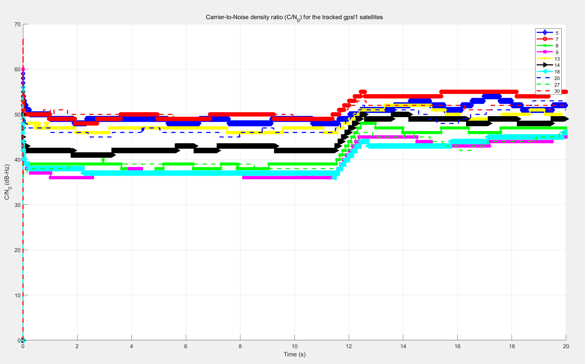
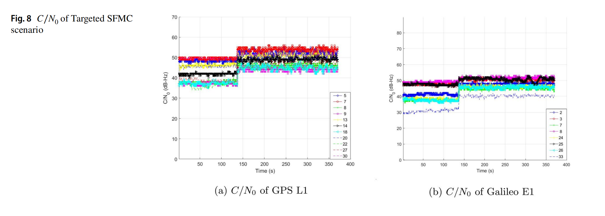
然后是某一个卫星的tracking，复现结果以PRN5为例：
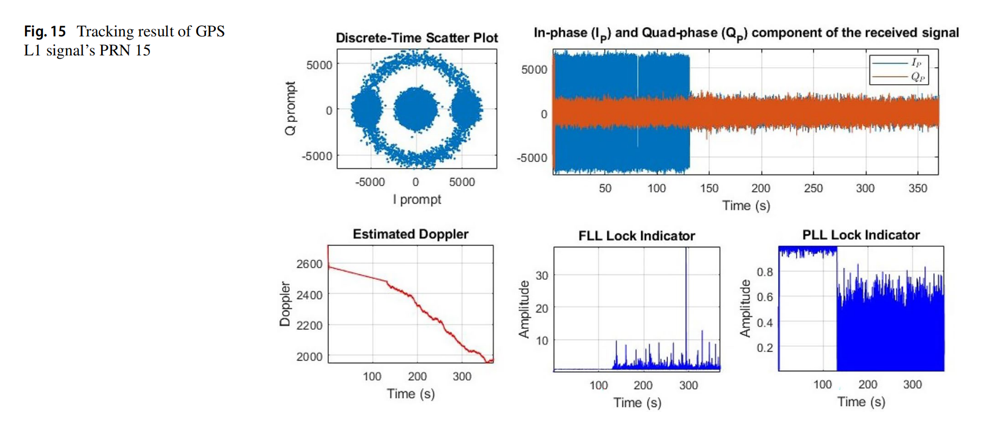
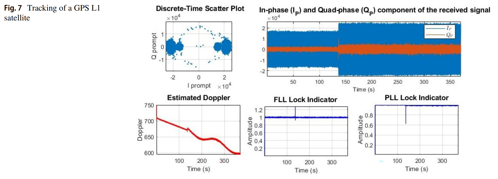
- 本来想着用异步欺骗数据集
UTD_L1_E1把Galileo的单系统测试一遍，但是时间有点晚啦，明天再见~👋
07.05
UTD_L1_E1顺利跑完，并复现了论文的部分内容，同样展示一下我们的异步欺骗/干扰结果与原文结果的图片对比：
载噪比（C/N0），我们与论文的结果都出现同步地下降：
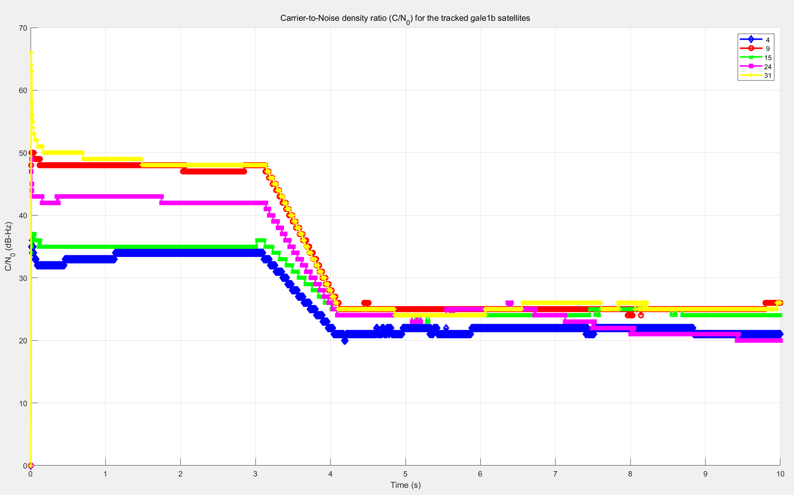
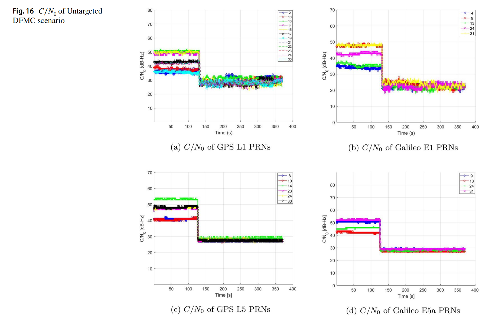
卫星的跟踪图中也呈现出同样的变化趋势，复现结果以PRN4为例： 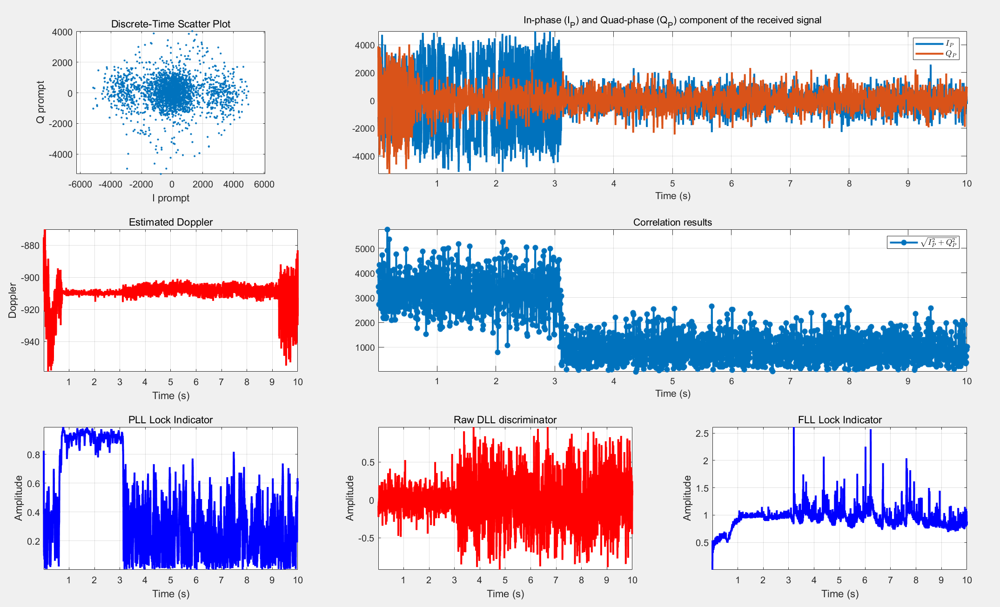
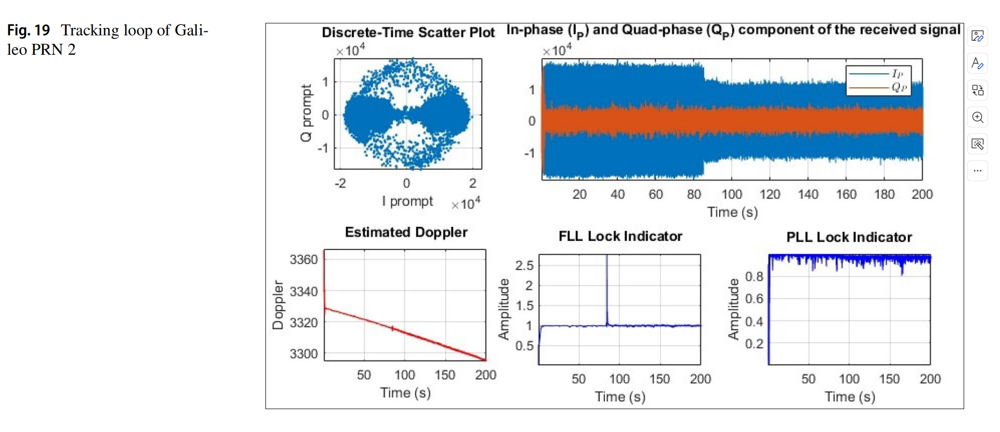
今天缺勤了组会，但是做了PPT和展示视频，得到了学长的认可😊，晚上在柏彦和同事交流了一下代码运行，和学长规划了一下未来工作，并确定了下周以及未来的工作方向：
- 首先就是把云南数据集了解清楚，学长建议做一定的可视化，这部分终于可以用python了😭，确定数据的情况之后，我们就可以用这份迷你的数据集做基础的CNN-LSTM的训练了。
- 其次就是继续攻克芬兰代码报错，让matlab程序跑通、并呈现出更多的可视化特征。这个部分其实也很重要，但是我对debug的热情不高😓，只能慢慢来了。
明天早上06:20集合，08:00高铁发车，早早歇息了~💤明天出差，应该要搁置一下了🚶
07.06~17
时隔近两周没有更新，原因是实践队工作＋和🐝广东出游，出游博客内容计划单开帖，笔者在这里只回顾总结做的一点点微乎其微的工作，没有持续记录的习惯导致只能在18号苦苦回忆😓。
- 对云南数据集有了一个初步的掌握，不同类型的数据分布极端，干扰与欺骗的数据量极小，正常的数据量又过于冗余，因此我们按照一个
2:1:1的比例制作了一个迷你数据集，转成了npz文件便于使用，并配以使用说明共享。值得一提的是，我们的数据共计2小时，时间窗口是60秒，迷你到共计只有7000个数据左右。 - 简单搭建了一个双向的CNN-LSTM模型，但还是过拟合了，训练了3个epoch便获得了100%的准确度。model核心代码放在下面👇。
1 | # --- 第1部分：CNN层 (用于提取空间特征) --- |
07.18
返程后梳理完之前的内容进度后，第一想法是整合芬兰数据集的数据，扩大数据容量。但是工程量有点大，于是笔者有了第二想法🤓，缩短时间窗口的长度，扩大数据容量的同时，提升时间精度，而且谈不上什么损失分类准确度，于是令时间窗口长度T = 15s再试试。
T=15s理论上引起的变化已经分析过了，我们在实践中发现数据容量并没有扩大多少，准确度损失也是微乎其微，效果就是在时间精度上取得了精进。
然后今天拿到了学长的移动硬盘，把数据装载进去了。以后做实验就要修改数据集的路径咯。
07.19
今天开组会哇，早上中午做了一些组会的准备，也算是兢兢业业了👉👈
下午和学长聊了很久，对我们未来的工作方向感到更加的清晰👀。我未来一周的主要工作包括以下：
完成了时间窗口T的缩减的实验：当分类延迟，也就是时间窗口T控制在
T=3的时候，我们的分类准确度仍能达到99%左右，实验数据如图所示： 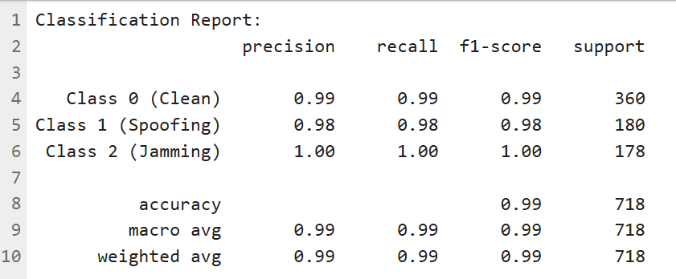
这样的精度与速度都是可接受的，所以我们在下周自己测数据之前，只需要先提升模型的泛化能力了✔
07.20
今天仔细研究了一下为什么芬兰数据处理起来如此的缓慢，之前我将处理缓慢归结为两个原因：
- 实时画图，每处理完一个单位的数据就要更新图表🖊
- 没有开启并行处理🛣
我们将画图的配置注释掉，并试图打开并行处理，但是这个功能需要专门的toolbox，只能先放一放🤦
目前跑完一个370s的数据需要6个小时左右，所以我选择放在某个晚上让电脑加个班吧~💻😭
07.21
- 今天是来天津大学爽玩的一天！笔者同事采到了一段
nmea格式的干扰信号，但是包含的信号特征与之前的云南数据集只有载噪比是重合的，并且没有自己独立的干净数据对照组，所以我们只能姑且放一放了~
07.22~23
- 大概花了两天的功夫完成了对FGI中
TGS_L1_E1.dat完成了部分的处理，370秒信号跟踪层的数据得以处理成了.mat文件。其中为了加速，我们选择关闭图像显示，matlab进程多开并行处理，大概3-4个小时可以处理370秒，也算是能跑了🤭 - 整体过程还是蛮折磨的，本来放在晚上跑，但是在我睡前睡后各报错中断了一次，所以23号白天才跑出来部分结果，至于为什么是“部分”🧐，是因为我们在导航解算的数据处理中调用的
doNavigation函数还存在我不清楚的bug🐛，但是鉴于trackdata已经够忙活了，现阶段不考虑深究。
07.24
- 拿到了.mat文件的第一想法是，制作成一个测试集，对我们之前训练的模型进行测试，如果效果理想我们就沿用之前的模型，如若不理想则联合二者数据集进行泛化训练，同时也要考虑对信号特征进行进一步提取了。
- 这个测试集制作最重要的步骤大概有以下几步：
- 特征对齐：特别地，.mat文件中只有载波相位（后期补档说明一下，其实没有找到，
carrPhase竟然不是载波相位），旧数据集中用的载波相位差分，这个变量需要我们计算。 - 数据格式对齐
- 数据归一化：旧数据集使用了Z-score归一化，我们需要从旧数据集中获取
mean和std，用他们来归一化我们的新数据集。 - 数据打乱
- 特征对齐：特别地，.mat文件中只有载波相位（后期补档说明一下，其实没有找到，
- 🤭又节外生枝了，感觉工作进度已经乱成一锅粥了，热一热还能喝🍚😓，我们在数据归一化的时候，回过头去计算保存云南数据集的
mean和std，发现了神奇的数据异常，总结下来大致能分成2点：- 异常值未处理，归一化的时候出大问题😰
- 云南数据集的
doMes和cpMes的标签标反了😓
07.25
- 一觉起来没绷住，
UTD_L1_E1.dat的处理结果又没拿到，又在357s处报错了，怀疑是受到了学术诈骗😮，论文里明明写的是377s啊，只能晚上再跑一遍了💪 - 为了用芬兰数据集测试云南模型下了不少数据一致的功夫，后来发现无论如何都对不上，我们移除了载波相位的信号特征作为训练指标，重新训练并测试，但是我们不应该使用新数据集的
mean和std，这样会破坏模型训练与测试的一致性原则，但是用云南数据集的mean和std又能看到明显的无法泛化的情况，最后尽最大的努力，我们对欺骗信号的检测成功率大概有50%，而干净信号的分类成功率为0%⚠，只能姑且认定二者的鸿沟如天堑吧🤦
09.17
事实证明没有什么能够让笔者坚持下来🤦。
但是好在项目一直在推进，我们在七月末采集了自己的数据，八月初做好了数据处理，八月中旬完成了所有实验和大部分的画图，八月底开始写论文，九月初便完工了。
现在的工作就是等老师把论文审完我们再返工，但是也不闲着，第二篇论文的构思已经大致成型了，顺着上一篇关于系统性地分析欺骗检测的泛化鸿沟问题，我们终于能搬出来我们的图网络（GNN）作为发展核心了。
当然我们之前考虑的就不只是GNN，而是附带注意力机制的GAT，希望每个卫星节点能够对附近的、更重要的卫星赋予更高的权重，从而进一步提升性能，也与时代潮流Transformer接轨。
下面谈一谈我对图网络模型性能的思考，首先第一点就是，图网络无论如何，应该具有绝对的终极扩展性，可以说是应用场景越复杂，泛化能力越卓越。
具体的原因我们在第一篇论文当中其实已经充分说明了，“设备指纹”的存在让所有无法绕过这一点的模型都会吃瘪，泛化性能会在不同程度上受到损伤。因此我们这一篇论文的核心观点之一便是：“真正的泛化能力，来源于对多卫星系统的内在物理规律的建模，而非对单个信息流更高级的模式适配”，这一点从目前我的角度来看是板上钉钉之事，就是不清楚这个物理建模的增益会有多么明显，希望有时间可以做个先验实验，而不是上来就调模型😊。话说回来，如果能够实现一个先验实验，也可以反向说明这个图网络的可解释性极强了，这也是我们选择用图网络的原因之一——直观明了易于理解。
09.21
（书接上文.jpg😉
第二点就是基于第一点之上，我们对基线模型的挑选，由于老师对baseline的先进性很执着，那我们就只能选取一些很先进的模型作为baseline，哪怕他们没有在这个领域真正发挥潜力，甚至没有露面。
我们在前面就请同事进行了比较深入的调研，发现整个领域像是一块处女地，没有人穿着深度学习的鞋子涉足过，大部分的前辈只是带着机器学习的想法解决一些不太需要思考的问题🧐。就像老师说的那样，学科交叉是具有滞后性的，很多领域内的专家并不一定能得心应手，这也是我来到这个团队的想要得到的答案。
具体来说就是我在一直问自己两个问题，别人为我带来什么？我又为别人带来什么？所以我不希望我在一个组里单方面地汲取知识，而是我也能为这个团队提供一些新鲜血液，和老师的每次争执与分歧都让我感到意义非凡，哈哈哈这么一想，我对老师的态度有些不好，老师太包容我了些。
话又说回来，我在baseline上和老师也有分歧（能看出来很频繁了），但是鉴于老师的论文经验比我多太多了，所以我目前考虑PatchTST和ViT两种不同处理方法的SOTA作为baseline，ViT可以嫖舍友的成果嘻嘻，舍友做实验很容易，我考虑的可就多了
叁 结语
具体后续再开一个帖子专门讲构思吧，这篇学习帖就即将关闭了，这个贯穿暑假的博客意义非凡，主要让我有一下两点认识：
- 第一次感知到专心做事对人的影响力真的很大，我一整个暑假都充盈着力量与热情，这让我对科研更加感兴趣了😊
- 正常人类博客持续日更的概率无限接近于0😴
这次博客又枯燥又水，应该没有什么人会读到这里了叭...
如果有，感谢一路相伴，我们下次再见👋
If you like this blog or find it useful for you, you are welcome to comment on it. You are also welcome to share this blog, so that more people can participate in it. If the images used in the blog infringe your copyright, please contact the author to delete them. Thank you !